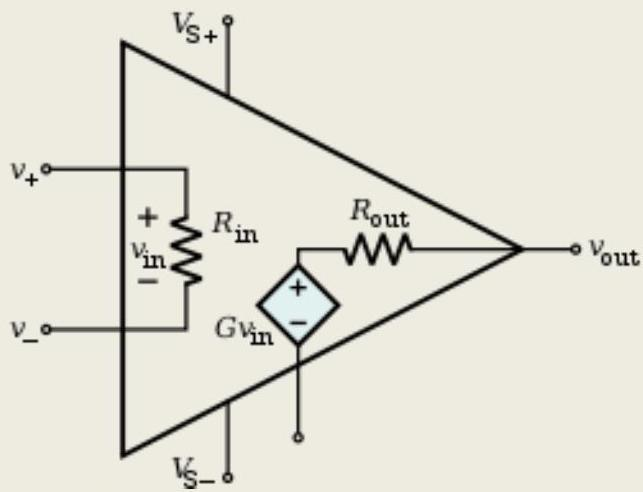
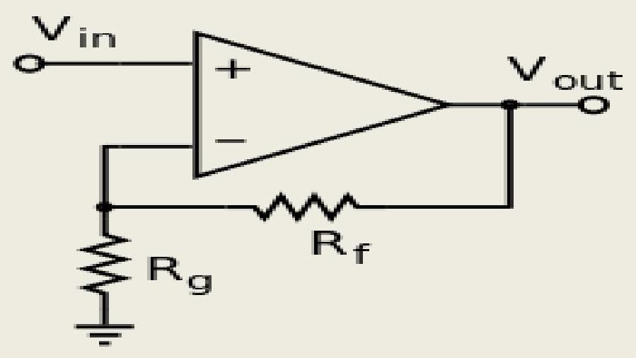
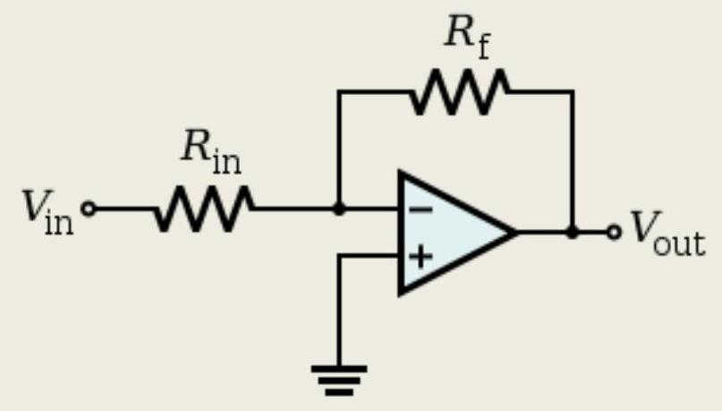
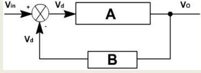
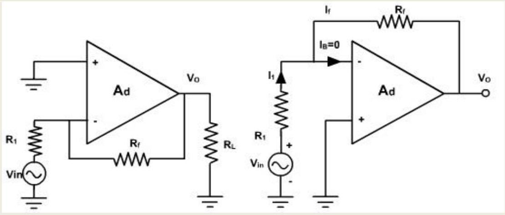
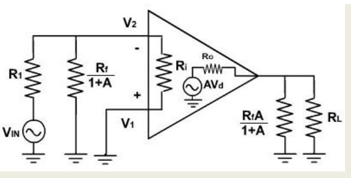

CHAPTER-4 OPERATIONAL AMPLIFIER CIRCUITS & FEEDBACK CONFIGURATIONS.
4.1 Explain general information of data sheet of 741 .
The 741 integrated circuit looks like any other 'chip'. However, it is a general purpose OP-AMP. You need only to know basic information about its operation and use. The diagram opposite shows the pins of the 741 OP-AMP. The important pins are 2, 3 and 6 because these represent inverting, non-inverting and voltage out. Notice the triangular diagram that represents an Op-Amp integrated circuit.
4.2 Define the following electrical characteristics input offset voltage, input offset current, CMMR, Large signal voltage gain, Slew rate .
The input offset voltage ( $V_{os}$ ) is a parameter defining the differential DC voltage required between the inputs of an amplifier, especially an operational amplifier (op-amp), to make the output zero (for voltage amplifiers, 0 volts with respect to ground or between differential outputs, depending on the output type)
The common-mode rejection ratio (CMRR) of a differential amplifier (or other device) is the rejection by the device of unwanted input signals common to both input leads, relative to the wanted difference signal.
Slew rate : Slew rate is defined as the maximum rate of change of output voltage per unit of time and is expressed as volt per second. Limitations in slew rate capability can give rise to non linear effects in electronic amplifiers.
4.3 Define Ideal operational amplifier and its equivalent circuits.
An ideal op-amp is usually considered to have the following properties:
Ideal op-amps
An ideal op-amp is usually considered to have the following properties:
- Infinite open-loop gain $G=v_{\text {out }} /$ '$v_{\text {in }}$
- Infinite input impedance $R_{in}$, and so zero input current
- Zero input offset voltage
- Infinite voltage range available at the output
- Infinite bandwidth with zero phase shift and infinite slew rate
- Zero output impedance Rout
- Zero noise
Infinite Common-mode rejection ratio (CMRR)
4.4 Draw and explain the Open Loop configuration (inverting, non-inverting Amplifier) Open loop amplifier
The magnitude of $A_{ol}$ is typically very large-100,000 or more for integrated circuit op-amps -and therefore even a quite small difference between $V+$ and $V-$ drives the amplifier output nearly to the supply voltage.
Closed loop
An op-amp with negative feedback (a non-inverting amplifier)
If predictable operation is desired, negative feedback is used, by applying a portion of the output voltage to the inverting input. The closed loop feedback greatly reduces the gain of the circuit. When negative feedback is used, the circuit's overall gain and response becomes determined mostly by the feedback network, rather than by the opamp characteristics. If the feedback network is made of components with values small relative to the op amp's input impedance, the value of the op-amp's open loop response Aol does not seriously affect the circuit's performance. The response of the op-amp circuit with its input, output, and feedback circuits to an input is characterized mathematically by a transfer function; designing an op-amp circuit to have a desired transfer function.
Inverting amplifier
An op-amp connected in the inverting amplifier configuration
In an inverting amplifier, the output voltage changes in an opposite direction to the input voltage.
As with the non-inverting amplifier, we start with the gain equation of the op-amp:
This time, $V_{\text {- }}$ is a function of both $V_{\text {out }}$ and $V_{\text {in }}$ due to the voltage divider formed by $R_{\mathrm{f}}$ and $R_{\text {in }}$. Again, the op-amp input does not apply an appreciable load, so:
Substituting this into the gain equation and solving for $V_{\text {out: }}$
If $A_{O L \text { is very large, this simplifies to }}$
A resistor is often inserted between the non-inverting input and ground (so both inputs "see" similar resistances), reducing the input offset voltage due to different voltage drops due to bias current, and may reduce distortion in some op-amps.
A DC-blocking capacitor may be inserted in series with the input resistor when a frequency response down to DC is not needed and any DC voltage on the input is unwanted. That is, the capacitive component of the input impedance inserts a DC zero and a low-frequency pole that gives the circuit a bandpass or high-pass characteristic.
The potentials at the operational amplifier inputs remain virtually constant (near ground) in the inverting configuration. The constant operating potential typically results in distortion levels that are lower than those attainable with the non-inverting topology.
4.5 Draw the block representation of four feedback configurations.
- Voltage - series feedback
- Voltage - shunt feedback
- Current - series feedback
- Current - shunt feedback
4.6 Draw the circuit diagram of the voltage series feedback amplifier and derive the close loop Voltage gain, gain of feedback circuits input resistance, and output resistance, bandwidth and total output offset voltage with feedback
Voltage series feedback:
It is also called non-inverting voltage feedback circuit. With this type of feedback, the input signal drives the noninverting input of an amplifier; a fraction of the output voltage is then fed back to the inverting input. The op-amp is represented by its symbol including its large signal voltage gain $\mathrm{A}_{d}$ or A , and the feedback circuit is composed of two resistors $R_{1}$ and $R_{f}$ as shown in fig. 5
Open loop vattage gain $A_{d}=\frac{v_{a}}{v_{d}}$
Closed loop woltage gain ACL $=\frac{v_{o}}{v_{i n}}$
Feedtack circuit gain $\mathrm{B}=\frac{\mathrm{y}_{f}}{\mathrm{v}_{a}}$
The differential voltage input $v_{d}=v_{i n}-v_{f}$
The feedback voltage always opposes the input voltage, (or is out of phase by $180^{\circ}$ with respect to input voltage), hence the feedback is said to be negative.
The closed loop voltage gain is given by
The product $A$ and $B$ is called loop gain. The gain loop gain is very large such that $A B \gg 1$
This shows that overall voltage gain of the circuit equals the reciprocal of $B$, the feedback gain. It means that closed loop gain is no longer dependent on the gain of the op-amp, but depends on the feedback of the voltage divider. The feedback gain B can be precisely controlled and it is independent of the amplifier.
Physically, what is happening in the circuit? The gain is approximately constant, even though differential voltage gain may change. Suppose A increases for some reasons (temperature change). Then the output voltage will try to increase. This means that more voltage is fedback to the inverting input, causing $v_{d}$ voltage to decrease. This almost completely offset the attempted increases in output voltage.
Similarly, if A decreases, The output voltage decreases. It reduces the feedback voltage $\mathrm{v}_{\mathrm{f}}$ and hence, $\mathrm{v}_{\mathrm{d}}$ voltage increases. Thus the output voltage increases almost to same level.
Different Input voltage is ideally zero.
Again considering the voltage equation,
or $\quad v_{d}=v_{o} / A_{d}$
Since $A_{d}$ is very large (ideally infinite)
and $\mathrm{v}_{1}=\mathrm{v}_{2}$ (ideal).
This says, that the voltage at non-inverting input terminal of an op-amp is approximately equal to that at the inverting input terminal provided that $A_{d}$ is very large. This concept is useful in the analysis of closed loop OPAMP circuits. For example, ideal closed loop voltage again can be obtained using the results
4.7 Draw the circuit diagram of the voltage shunt feedback amplifier and derive the close loop Voltage gain, gain of feedback circuits, and input resistance, and output resistance, bandwidth and total output offset voltage with feedback
Voltage shunt Feedback:
Fig. 1, shows the voltage shunt feedback amplifier using OPAMP.
Fig. 1
The input voltage drives the inverting terminal, and the amplified as well as inverted output signal is also applied to the inverting input via the feedback resistor $\mathrm{R}_{\mathrm{f}}$. This arrangement forms a negative feedback because any increase in the output signal results in a feedback signal into the inverting input signal causing a decrease in the output signal. The non-inverting terminal is grounded. Resistor $\mathrm{R}_{1}$ is connected in series with the source.
The closed loop voltage gain can be obtained by, writing Kirchoff's current equation at the input node $\mathrm{V}_{2}$.
The closed loop volt since $R_{1}$ is very large, the input current $i_{B}$ is negligibly small.
Since $A$ is veryvery high therefore, $A R_{1} \gg\left(R_{1}+R_{t}\right)$
Since, $B=\left(R_{1} / R_{f}\right)$
Input Resistance with Feedback:
To find the input resistance Miller equivalent of the feedback resistor $R_{f}$, is obtained, i.e. $R_{f}$ is splitted into its two Miller components as shown in fig. 2. Therefore, input resistance with feedback $\mathrm{R}_{\text {if }}$ is then
Since $R$ and $A$ are very large, Therefore,
Fig. 2
$\left(\frac{R_{f}}{1+A}\right) \| R_{i} \approx 00 \mathrm{hm}$
Hence $R_{i f}=R_{i}$
Output Resistance with Feedback:
The output resistance with feedback $\mathrm{Rof}_{\text {of }}$ is the resistance measured at the output terminal of the feedback amplifier. The output resistance can be obtained using Thevenin's equivalent circuit,shown in fig. 3.
Since $R_{0}$ is very small as compared to $R_{f}+\left(R_{1}| | R_{2}\right)$
Therefore, i.e. $i_{0}=i_{a}$
where, $B=R_{1} / R_{f}$
Similarly, the bandwidth increases by (1+AB) and total output offset voltage reduces by (1+AB).